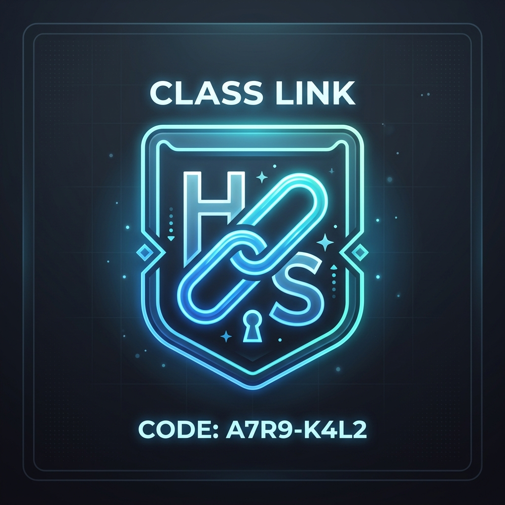

압도적인 에듀테크,
AI 스피치마스터
미래 교실의 발표 수업이 오늘 여기에 도착했습니다.
선생님과 학생의 연결
선생님이 배포한 학급 코드 하나면 준비 끝! 복잡한 가입 절차 없이 학생들은 반에 바로 가입하여 스피치 훈련을 시작할 수 있습니다. 디지털 소외 학생 없이 모두가 쉽게 접근하는 스마트 교실을 경험하세요.

기초 낭독 연습 (저학년)
화면 속 귀여운 'AI 스피치 버디'와 함께 대본을 읽어보세요. 네이버 클로바 음성인식 시스템이 즉각적으로 발음과 유창성을 실시간으로 분석합니다.
연습을 거듭해 레벨을 올리고 영광의 '무지개 하트'를 획득하는 짜릿한 성취감을 맛보세요!
실전 발표 훈련 (고학년)
노트북 웹캠 하나만 있으면 실제 강단이 됩니다. 구글 MediaPipe 비전 AI가 478개의 얼굴 랜드마크를 추적하여 자세의 흔들림과 청중 응시율을 소름 돋게 짚어냅니다.
단순한 읽기 연습을 넘어 시선 처리와 바른 자세까지 완벽하게 코칭받을 수 있습니다.
자동화된 교사 대시보드
선생님은 학생들의 5대 역량(자세, 시선, 성량, 발음, 속도)을 실시간 다이나믹 차트로 한눈에 파악합니다.
분석된 훈련 데이터는 Gemini 3.5 Flash를 거쳐 단 1초 만에 실제 선생님이 작성한 듯한 나이스(NEIS)용 관찰행동특성 문구로 둔갑합니다. 복사해서 바로 활용하세요!
🎙️ 상세한 발음 및 유창성 진단
빠르고 뭉개진 아이들의 발음도 Naver Clova Speech가 정확하게 텍스트로 변환합니다. 원본 대본과 대조하여 정확도와 말하기 속도(WPM)를 정밀 진단합니다.
👁️ 최첨단 비전 AI 랜드마크 트래킹
고개 각도와 양쪽 눈동자의 좌표를 실시간으로 추적하여 정면 응시율과 몸의 흔들림을 파악하고 즉각적인 자세 교정을 돕습니다.
✨ 생기부 작성 업무 혁신 (Gemini)
서술형 문체 패턴을 완벽히 모사하는 Gemini 3.5가 학생 개개인의 맞춤형 관찰 특성 문구를 자동으로 생성하여 선생님의 업무 부담을 극적으로 낮춥니다.
🔒 완전한 프라이버시 및 데이터 보안
비전 AI 카메라는 오직 접속한 웹 브라우저 로컬 내부에서만 처리되며, 영상은 절대 외부 서버로 전송되거나 저장되지 않아 안심할 수 있습니다.